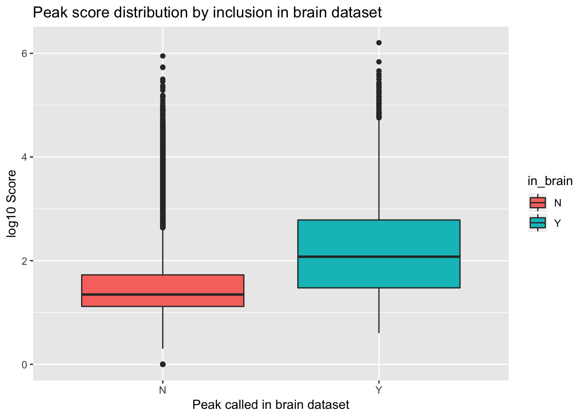

Last updated: 2019-02-15
Checks: 6 0
Knit directory: threeprimeseq/analysis/
This reproducible R Markdown analysis was created with workflowr (version 1.2.0). The Report tab describes the reproducibility checks that were applied when the results were created. The Past versions tab lists the development history.
Great! Since the R Markdown file has been committed to the Git repository, you know the exact version of the code that produced these results.
Great job! The global environment was empty. Objects defined in the global environment can affect the analysis in your R Markdown file in unknown ways. For reproduciblity it’s best to always run the code in an empty environment.
The command set.seed(12345) was run prior to running the code in the R Markdown file. Setting a seed ensures that any results that rely on randomness, e.g. subsampling or permutations, are reproducible.
Great job! Recording the operating system, R version, and package versions is critical for reproducibility.
Nice! There were no cached chunks for this analysis, so you can be confident that you successfully produced the results during this run.
Great! You are using Git for version control. Tracking code development and connecting the code version to the results is critical for reproducibility. The version displayed above was the version of the Git repository at the time these results were generated.
Note that you need to be careful to ensure that all relevant files for the analysis have been committed to Git prior to generating the results (you can use wflow_publish or wflow_git_commit). workflowr only checks the R Markdown file, but you know if there are other scripts or data files that it depends on. Below is the status of the Git repository when the results were generated:
Ignored files:
Ignored: .DS_Store
Ignored: .Rhistory
Ignored: .Rproj.user/
Ignored: data/.DS_Store
Ignored: data/perm_QTL_trans_noMP_5percov/
Ignored: output/.DS_Store
Untracked files:
Untracked: KalistoAbundance18486.txt
Untracked: analysis/4suDataIGV.Rmd
Untracked: analysis/DirectionapaQTL.Rmd
Untracked: analysis/EvaleQTLs.Rmd
Untracked: analysis/YL_QTL_test.Rmd
Untracked: analysis/ncbiRefSeq_sm.sort.mRNA.bed
Untracked: analysis/snake.config.notes.Rmd
Untracked: analysis/verifyBAM.Rmd
Untracked: analysis/verifybam_dubs.Rmd
Untracked: code/PeaksToCoverPerReads.py
Untracked: code/strober_pc_pve_heatmap_func.R
Untracked: data/18486.genecov.txt
Untracked: data/APApeaksYL.total.inbrain.bed
Untracked: data/ApaQTLs/
Untracked: data/ChromHmmOverlap/
Untracked: data/DistTXN2Peak_genelocAnno/
Untracked: data/GM12878.chromHMM.bed
Untracked: data/GM12878.chromHMM.txt
Untracked: data/LianoglouLCL/
Untracked: data/LocusZoom/
Untracked: data/NuclearApaQTLs.txt
Untracked: data/PeakCounts/
Untracked: data/PeakCounts_noMP_5perc/
Untracked: data/PeakCounts_noMP_genelocanno/
Untracked: data/PeakUsage/
Untracked: data/PeakUsage_noMP/
Untracked: data/PeakUsage_noMP_GeneLocAnno/
Untracked: data/PeaksUsed/
Untracked: data/PeaksUsed_noMP_5percCov/
Untracked: data/RNAkalisto/
Untracked: data/RefSeq_annotations/
Untracked: data/TotalApaQTLs.txt
Untracked: data/Totalpeaks_filtered_clean.bed
Untracked: data/UnderstandPeaksQC/
Untracked: data/WASP_STAT/
Untracked: data/YL-SP-18486-T-combined-genecov.txt
Untracked: data/YL-SP-18486-T_S9_R1_001-genecov.txt
Untracked: data/YL_QTL_test/
Untracked: data/apaExamp/
Untracked: data/apaQTL_examp_noMP/
Untracked: data/bedgraph_peaks/
Untracked: data/bin200.5.T.nuccov.bed
Untracked: data/bin200.Anuccov.bed
Untracked: data/bin200.nuccov.bed
Untracked: data/clean_peaks/
Untracked: data/comb_map_stats.csv
Untracked: data/comb_map_stats.xlsx
Untracked: data/comb_map_stats_39ind.csv
Untracked: data/combined_reads_mapped_three_prime_seq.csv
Untracked: data/diff_iso_GeneLocAnno/
Untracked: data/diff_iso_proc/
Untracked: data/diff_iso_trans/
Untracked: data/ensemble_to_genename.txt
Untracked: data/example_gene_peakQuant/
Untracked: data/explainProtVar/
Untracked: data/filtPeakOppstrand_cov_noMP_GeneLocAnno_5perc/
Untracked: data/filtered_APApeaks_merged_allchrom_refseqTrans.closest2End.bed
Untracked: data/filtered_APApeaks_merged_allchrom_refseqTrans.closest2End.noties.bed
Untracked: data/first50lines_closest.txt
Untracked: data/gencov.test.csv
Untracked: data/gencov.test.txt
Untracked: data/gencov_zero.test.csv
Untracked: data/gencov_zero.test.txt
Untracked: data/gene_cov/
Untracked: data/joined
Untracked: data/leafcutter/
Untracked: data/merged_combined_YL-SP-threeprimeseq.bg
Untracked: data/molPheno_noMP/
Untracked: data/mol_overlap/
Untracked: data/mol_pheno/
Untracked: data/nom_QTL/
Untracked: data/nom_QTL_opp/
Untracked: data/nom_QTL_trans/
Untracked: data/nuc6up/
Untracked: data/nuc_10up/
Untracked: data/other_qtls/
Untracked: data/pQTL_otherphen/
Untracked: data/peakPerRefSeqGene/
Untracked: data/perm_QTL/
Untracked: data/perm_QTL_GeneLocAnno_noMP_5percov/
Untracked: data/perm_QTL_GeneLocAnno_noMP_5percov_3UTR/
Untracked: data/perm_QTL_opp/
Untracked: data/perm_QTL_trans/
Untracked: data/perm_QTL_trans_filt/
Untracked: data/protAndAPAAndExplmRes.Rda
Untracked: data/protAndAPAlmRes.Rda
Untracked: data/protAndExpressionlmRes.Rda
Untracked: data/reads_mapped_three_prime_seq.csv
Untracked: data/smash.cov.results.bed
Untracked: data/smash.cov.results.csv
Untracked: data/smash.cov.results.txt
Untracked: data/smash_testregion/
Untracked: data/ssFC200.cov.bed
Untracked: data/temp.file1
Untracked: data/temp.file2
Untracked: data/temp.gencov.test.txt
Untracked: data/temp.gencov_zero.test.txt
Untracked: data/threePrimeSeqMetaData.csv
Untracked: data/threePrimeSeqMetaData55Ind.txt
Untracked: data/threePrimeSeqMetaData55Ind.xlsx
Untracked: data/threePrimeSeqMetaData55Ind_noDup.txt
Untracked: data/threePrimeSeqMetaData55Ind_noDup.xlsx
Untracked: data/threePrimeSeqMetaData55Ind_noDup_WASPMAP.txt
Untracked: data/threePrimeSeqMetaData55Ind_noDup_WASPMAP.xlsx
Untracked: output/picard/
Untracked: output/plots/
Untracked: output/qual.fig2.pdf
Unstaged changes:
Modified: analysis/28ind.peak.explore.Rmd
Modified: analysis/CompareLianoglouData.Rmd
Modified: analysis/NewPeakPostMP.Rmd
Modified: analysis/apaQTLoverlapGWAS.Rmd
Modified: analysis/cleanupdtseq.internalpriming.Rmd
Modified: analysis/coloc_apaQTLs_protQTLs.Rmd
Modified: analysis/dif.iso.usage.leafcutter.Rmd
Modified: analysis/diff_iso_pipeline.Rmd
Modified: analysis/explainpQTLs.Rmd
Modified: analysis/explore.filters.Rmd
Modified: analysis/flash2mash.Rmd
Modified: analysis/mispriming_approach.Rmd
Modified: analysis/overlapMolQTL.Rmd
Modified: analysis/overlapMolQTL.opposite.Rmd
Modified: analysis/overlap_qtls.Rmd
Modified: analysis/peakOverlap_oppstrand.Rmd
Modified: analysis/peakQCPPlots.Rmd
Modified: analysis/pheno.leaf.comb.Rmd
Modified: analysis/pipeline_55Ind.Rmd
Modified: analysis/swarmPlots_QTLs.Rmd
Modified: analysis/test.max2.Rmd
Modified: analysis/test.smash.Rmd
Modified: analysis/understandPeaks.Rmd
Modified: code/Snakefile
Note that any generated files, e.g. HTML, png, CSS, etc., are not included in this status report because it is ok for generated content to have uncommitted changes.
These are the previous versions of the R Markdown and HTML files. If you’ve configured a remote Git repository (see ?wflow_git_remote), click on the hyperlinks in the table below to view them.
| File | Version | Author | Date | Message |
|---|---|---|---|---|
| html | 3e56058 | Briana Mittleman | 2018-07-17 | Build site. |
| Rmd | c287f4e | Briana Mittleman | 2018-07-17 | call Brain peaks with Yangs script |
| html | dc4a51a | Briana Mittleman | 2018-07-16 | Build site. |
| Rmd | 4fede84 | Briana Mittleman | 2018-07-16 | add eval brain analysis |
I downloaded the brain 3’ seq data from https://www.ncbi.nlm.nih.gov/geo/query/acc.cgi?acc=GSM747470 and I want to use this analysis to see how similar their peaks are to ours eventhough the data is from different cell types.
First I will use the bedtools jaccard function to explore the overlaps. It will give me one stat that is the length(intersection)/length(union) - length(intersection). Here I can have file A brain peaks and file B be our peaks to see the similarity between the sets.
#!/bin/bash
#SBATCH --job-name=jaccard_brain
#SBATCH --account=pi-yangili1
#SBATCH --time=24:00:00
#SBATCH --output=jacard_brain.out
#SBATCH --error=jacard_brain.err
#SBATCH --partition=broadwl
#SBATCH --mem=16G
#SBATCH --mail-type=END
module load Anaconda3
source activate three-prime-env
bedtools jaccard -a /project2/gilad/briana/threeprimeseq/data/derti_brain/GSM747470_human_brain.sites.clustered.hg19.sort.bed -b /project2/gilad/briana/threeprimeseq/data/peaks/APApeaksYL.total.bed > /project2/gilad/briana/threeprimeseq/data/derti_brain/total.jaccard.txt Results: intersection union-intersection jaccard n_intersections 21371 25414133 0.00084091 21352
The brain set has 89110 peaks and our set has 288350. I will filter ours by score then see if the top 25% have a higher overlap percentage.
library(workflowr)This is workflowr version 1.2.0
Run ?workflowr for help getting startedlibrary(dplyr)
Attaching package: 'dplyr'The following objects are masked from 'package:stats':
filter, lagThe following objects are masked from 'package:base':
intersect, setdiff, setequal, unionlibrary(tidyr)
library(ggplot2)
library(reshape2)
Attaching package: 'reshape2'The following object is masked from 'package:tidyr':
smithsYL_peaks=read.table("../data/bedgraph_peaks/APApeaks.bed", col.names = c("chr", "start", "end", "count", "strand", "score")) %>% mutate(length=end-start)I want the counts for the top 25% of the peaks.
quantile(YL_peaks$count) 0% 25% 50% 75% 100%
1.000000e+00 1.343902e+01 2.353933e+01 6.091061e+01 1.604636e+06 I will subset the peaks by having a count > 61.
awk '$4 >= 60 {print}' APApeaksYL.total.bed > APApeaksYL.top25.total.bedI can rerun the jaccard with this and see if it changes, this new file has 72877 peaks.
Results:
intersection union-intersection jaccard n_intersections 13221 6452066 0.00204911 13207
The proportion of overlap increased. Next I can try to make plots where I seperate my peaks by if they have a corresponding one in the brain file then plot the scores. To do this I will first use bedtool intersect to get just my peaks that contain a peak in the brain file. I can then use dplyr to merge them.
Here A is my file and B is the brain file.
#!/bin/bash
#SBATCH --job-name=int_brain
#SBATCH --account=pi-yangili1
#SBATCH --time=24:00:00
#SBATCH --output=int.brain.out
#SBATCH --error=int.brain.err
#SBATCH --partition=broadwl
#SBATCH --mem=16G
#SBATCH --mail-type=END
module load Anaconda3
source activate three-prime-env
bedtools intersect -wa -a /project2/gilad/briana/threeprimeseq/data/peaks/APApeaksYL.total.bed -b /project2/gilad/briana/threeprimeseq/data/derti_brain/GSM747470_human_brain.sites.clustered.hg19.sort.bed > /project2/gilad/briana/threeprimeseq/data/derti_brain/APApeaksYL.total.inbrain.bed
The resulting file has 21378 peaks.
YL_peaks_overlap=read.table("../data/APApeaksYL.total.inbrain.bed", col.names = c("chr", "start", "end", "count", "strand", "score")) %>% mutate(length=end-start) %>% mutate(in_brain="Y")Now I need to join them.
YL_peaks_join=YL_peaks %>% full_join(YL_peaks_overlap, by = c("chr", "start", "end", "count", "strand", "score", "length"))
YL_peaks_join$in_brain[is.na(YL_peaks_join$in_brain)]="N"
YL_peaks_join_sel=YL_peaks_join %>% select(count, in_brain)Plot these.
ggplot(YL_peaks_join_sel, aes(y=log10(count), x=in_brain, fill=in_brain)) + geom_boxplot() + labs(x="Peak called in brain dataset", y="log10 Score", title="Peak score distribution by inclusion in brain dataset")
| Version | Author | Date |
|---|---|---|
| dc4a51a | Briana Mittleman | 2018-07-16 |
ggplot(YL_peaks_join_sel, aes(x=log10(count), fill=in_brain), bins=50) + geom_density(position="identity", alpha=.5) + labs(x="log10 of Score", title="Distribution of log10 Scores in peaks included in brain dataset")
| Version | Author | Date |
|---|---|---|
| dc4a51a | Briana Mittleman | 2018-07-16 |
It would be better if the background was just a random subset of the same number. There are 21378 included peaks so I should select a random 21378 to make a background distribution.
samp_YLpeaks= sample_n(YL_peaks, 21378)
ggplot() + geom_histogram(data=samp_YLpeaks, aes(log10(count)), bins=100) + geom_histogram(data=YL_peaks_overlap, aes(log10(count)),fill="Red", bins=100) + labs(x="Log10 of Score", title="Scores in Overlapping set compared to scores in random set")
| Version | Author | Date |
|---|---|---|
| dc4a51a | Briana Mittleman | 2018-07-16 |
The next step is to download the Brain fastq data and call peaks using Yangs script. I used sra-tools to download SRR299106. Then I ran my snakemake pipeline on it.
I need to make the genome cov file then use Yangs script to call the peaks.
#!/bin/bash
#SBATCH --job-name=braingencovsplit
#SBATCH --account=pi-yangili1
#SBATCH --time=24:00:00
#SBATCH --output=brain_gencovsplit.out
#SBATCH --error=brain_gencovaplit.err
#SBATCH --partition=broadwl
#SBATCH --mem=40G
#SBATCH --mail-type=END
module load Anaconda3
source activate three-prime-env
bedtools genomecov -ibam /project2/gilad/briana/derti_brain_raw/data/sort/derti_brain-sort.bam -d -split > /project2/gilad/briana/derti_brain_raw/data/gencov/derti_brain.gencov.bedWrap Yangs script:
#!/bin/bash
#SBATCH --job-name=w_getpeakYLB
#SBATCH --account=pi-yangili1
#SBATCH --time=24:00:00
#SBATCH --output=w_getpeakYLB.out
#SBATCH --error=w_getpeakYLB.err
#SBATCH --partition=broadwl
#SBATCH --mem=12G
#SBATCH --mail-type=END
module load Anaconda3
source activate three-prime-env
for i in $(seq 1 22); do
sbatch callPeaksYL_derti.py $i
done
sessionInfo()R version 3.5.1 (2018-07-02)
Platform: x86_64-apple-darwin15.6.0 (64-bit)
Running under: macOS 10.14.1
Matrix products: default
BLAS: /Library/Frameworks/R.framework/Versions/3.5/Resources/lib/libRblas.0.dylib
LAPACK: /Library/Frameworks/R.framework/Versions/3.5/Resources/lib/libRlapack.dylib
locale:
[1] en_US.UTF-8/en_US.UTF-8/en_US.UTF-8/C/en_US.UTF-8/en_US.UTF-8
attached base packages:
[1] stats graphics grDevices utils datasets methods base
other attached packages:
[1] bindrcpp_0.2.2 reshape2_1.4.3 ggplot2_3.0.0 tidyr_0.8.1
[5] dplyr_0.7.6 workflowr_1.2.0
loaded via a namespace (and not attached):
[1] Rcpp_0.12.19 knitr_1.20 bindr_0.1.1 whisker_0.3-2
[5] magrittr_1.5 munsell_0.5.0 tidyselect_0.2.4 colorspace_1.3-2
[9] R6_2.3.0 rlang_0.2.2 plyr_1.8.4 stringr_1.4.0
[13] tools_3.5.1 grid_3.5.1 gtable_0.2.0 withr_2.1.2
[17] git2r_0.24.0 htmltools_0.3.6 lazyeval_0.2.1 yaml_2.2.0
[21] rprojroot_1.3-2 digest_0.6.17 assertthat_0.2.0 tibble_1.4.2
[25] crayon_1.3.4 purrr_0.2.5 fs_1.2.6 glue_1.3.0
[29] evaluate_0.13 rmarkdown_1.11 labeling_0.3 stringi_1.2.4
[33] compiler_3.5.1 pillar_1.3.0 scales_1.0.0 backports_1.1.2
[37] pkgconfig_2.0.2